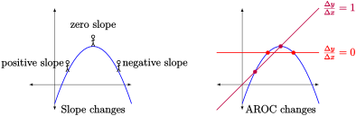

Chapter 8 Understanding Slope
The concepts contained in Chapter 6–8 are all connected in important, but sometimes tricky to follow ways. As you go through this section, you can refer to the diagram below to see how what we are covering here is related to, and also distinct from, what we have already covered.
Section 8.1 Slopes and Rates of Change
In general, the average rate of change (AROC) of any function \(f(x)\) over the interval \([a,b]\) is given by
Note: the AROC formula is the same formula as the one for the slope of a line. In other words, the concepts of AROC and slope are closely related.
The concept of "slope" is easier to understand for some functions than for others.
- Linear Functions
-
If \(f(x)\) is a line, the following are always the same, regardless of the points \(a,b\) chosen
the slope of \(f\)
the average rate of change of \(f\) on \([a,b]\)
the instantaneous rate of change of \(f\) at \(a\)
- Quadratic Functions
-
Quadratic functions do not have a constant slope. In other words, if you imagine standing on the curve, the slope of the hill you are standing on will be steeper in some places, and flatter in other places.
As a consequence, quadratic functions do not have a constant average rate of change \(=\dfrac{\Delta y}{\Delta x}\text{.}\)
In fact, we have a more general result. A function has a constant slope if and only if the function is a line.
Subsection 8.1.1 Understand Rates by Studying Slopes
Our goal in this class is to develop tools that will help us understand the economic concept of a "rate of change" by connecting it to the graphical concept of a slope.
Because we only really understand slopes in the context of "lines," the first step is to define a line approximating the function \(f(x)\text{.}\) We will call this the tangent line.
In the image above, the blue line perfectly lines up with \(f(x)\) at the point \((a,f(a))\text{.}\) We call the blue line the line tangent to \(f(x)\) at \(a\). If we can find the slope of the tangent line, then we will be able to find the slope of the function at \(a\text{,}\) and visa versa.
Proposition 8.1.
Suppose that we know the slope \(m\) of the tangent line or, equivalently of \(f\text{,}\) at the point \(a\text{.}\) Then the line tangent to \(f(x)\) at \(a\) has the equation
where \({\color{blue} m}\text{,}\) \({\color{red} a},\) and \({\color{red} f(a)}\) are constant numbers.
Checkpoint 8.2.
Suppose that you are told that at the point with \(a=5\text{,}\) that \(f(5) = 17\text{,}\) and that the line tangent to \(f\) at \(5\) has slope \(-3\text{.}\) Find an equation for the tangent lin to \(f\) at \(a=5\text{.}\)
We are asked for the equation of a line, so start by writing down General Point Slope Form.
First, \(x_1\) will always be the point that we are looking for the tangent to be "at". In this example, we want the tangent at \(a=5\text{,}\) so we have \(x_1=5\)
Second, \(x_2\) will always be the height of the tangent at \(x_1\text{.}\) In other words,
Finally, the slope of the tangent is always equal to the slope of the function. In this example, we are just told that both slopes are equal to
Putting it all together, we get
Because most functions have curves in them, looking at different points \(a\) will give you tangent lines with very different slopes.
Said another way, the slope of the tangent to \(f(x)\) is a function of the point \(a\) where you are centering your approximation. For simplicity, we often denote this using the notation
Connecting Slope and Tangent Lines.
-
Near a point \((a,f(a))\text{,}\) the function \(f(x)\) is approximately equal to the line tangent to \(f\) at that point. Mathematically, this means
\begin{equation*} (\text{height on function }f) \approx (\text{height on tangent line centered at } a) \end{equation*}for all values of \(x\) near to \(a\)
-
It follows that the slope of the function \(f\) at \(a\) is approximately equal to the slope of the tangent at the point. In other words,
\begin{equation*} (\text{slope of }y=f(x) \text{ at }x=a) \approx (\text{slope of the \textbf{tangent} to } f \text{ at } a) \end{equation*}
This observation is very powerful, and it works in two directions. For now, we will see how to use tangent lines to help us to approximate the slope of a curve \(y=f(x)\) at various values of \(a\text{.}\)
Later, we will see how to compute the slope of \(f(x)\) precisely at some point \(a\text{.}\) As a result, we will also have found the slope of the line tangent to the function at that value of \(a\text{.}\)
Checkpoint 8.3.
A function \(y=f(x)\) is defined using the graph below.
Approximate the slope to the function \(y=f(x)\) at the points \(a=1\text{,}\) \(a=2\text{,}\) \(a=3\text{,}\) and \(a=4\)We will approximate the slope at a value of \(a\) by first drawing the tangent to the curve at that point. We can then find two points on the line and use the slope formula
Note that these points will not be on the original curve, since we are technically finding the slope of the tangent line, which we are only using to approximate the real curve.
To find the tangent to a curve at a point, take a ruler and "line it up" with the curve at that point. The interactive graphic below shows the line you would get at each point.
-
To find the slope of \(f\) at \(a=1\text{,}\) find the tangent to \(f\) at \(a=1\text{.}\) Find two points on this tangent line. One is \((1,3)\text{,}\) and another is \((0,2)\text{.}\) The slope of the line between these lines is
\begin{equation*} m = \dfrac{3-2}{1-0} = \dfrac{1}{1} = 1 \end{equation*}Therefore, the slope of \(f(x)\) at \(a=1\) is equal to 1.
-
To find the slope of \(f\) at \(a=2\text{,}\) first, draw the line tangent to \(f(x)\) at \(a=2\text{,}\) and find two points on that line. One point is \((2,3.75)\text{,}\) and another is \((0,3.75)\) The slope of the line between these lines is
\begin{equation*} m = \dfrac{3.75-3.75}{2-0} = \dfrac{0}{2} = 0 \end{equation*}Therefore, the slope of \(f(x)\) at \(a=2\) is equal to 0.
-
To find the slope of \(f\) at \(a=3\text{,}\) first, draw the line tangent to \(f(x)\) at \(a=3\text{,}\) and find two points on that line. One point is \((3,0.5)\text{,}\) and another is \((0,3.5)\) The slope of the line between these lines is
\begin{equation*} m = \dfrac{0.5-3.5}{3-0} = \dfrac{-3}{3} = -1 \end{equation*}Therefore, the slope of \(f(x)\) at \(a=3\) is equal to -1.
-
To find the slope of \(f\) at \(a=4\text{,}\) first, draw the line tangent to \(f(x)\) at \(a=4\text{,}\) and find two points on that line. One point is \((4,-0.5)\text{,}\) and another is \((0,-0.5)\) The slope of the line between these lines is
\begin{equation*} m = \dfrac{0.5-(-0.5)}{4-0} = \dfrac{0}{4} = 0 \end{equation*}Therefore, the slope of \(f(x)\) at \(a=4\) is equal to 0.
Section 8.2 Approximating Slope with Secant Lines
Given a function \(f(x)\text{,}\) and an \(x\) value \(a\text{,}\) we want to find the slope of \(f\) at \(a\text{.}\) Unfortunately, you need two points to define a line, but a tangent line usualy only touches the curve at \(one point\text{.}\) To help us define slope precisely, we will need a new concept.
Definition 8.4.
The secant line to \(f\) at \(a,b\) is the line that passes through the graph of \(y=f(x)\) at \(x=a\) and \(x=b\text{.}\)
Furthermore, the slope of the secant to \(f\) at \(a,b\) is equal to
The key idea thing to notice is that when \(b\) is very close to \(a\text{,}\) then the secant line is very close to the tangent line.
Exploration 8.1.
Let \(f(x) = x^2 + 2x\text{.}\) We want to study the function at \(a=3\text{.}\)
(a)
Estimage the slope of \(f\) at \(a=3\) by computing the slope between \(a=3\) and a value \(b\) that is 0.1 units away, 0.01 units away, and 0.001 units away.
Solution.Compute the average rate of change \(\dfrac{\Delta y}{\Delta x}\) over the intervals \([3,3.1]\text{,}\) \([3,3.01]\text{,}\) and \([3,3.001]\text{.}\) In other words, we have the \(x\) values, so we need to find the \(y\) values, the changes \(\Delta x\) and \(\Delta y\text{,}\) and then divide those changes to get the average change \(\frac{\Delta y}{\Delta x}\text{.}\)
| \(x_1\) | \(x_2\) | \(\Delta x\) | \(y_1\) | \(y_2\) | \(\Delta y\) | \(\Delta y/\Delta x\) |
| \(3\) | \(\color{red} 3.1\) | \(0.1\) | \(\color{blue} f(3) = 3^2 + 2\cdot 3 = 15 \) | \(\color{blue} f(3.1) = 3.1^2 + 2\cdot 3.1 = 15.81\) | \(\color{green} y_2 - y_1 = 15.81-15 = 0.81\) | \(\Delta y/\Delta x = 0.81/0.1 = 8.1\) |
| \(3\) | \(\color{red} 3.01\) | \(0.01\) | \(\color{blue} f(3) = 3^2 + 2\cdot 3 = 15 \) | \(\color{blue} f(3.01) = 3.01^2 + 2\cdot 3.01 = 15.0801\) | \(\color{green} y_2 - y_1 = 15.81-15 = 0.0801\) | \(\Delta y/\Delta x = 0.0801/0.01 = 8.01\) |
| \(3\) | \(\color{red} 3.001\) | \(0.001\) | \(\color{blue} f(3) = 3^2 + 2\cdot 3 = 15 \) | \(\color{blue} f(3.001) = 3.001^2 + 2\cdot 3.001 = 15.008001\) | \(\color{green} y_2 - y_1 = 15.81-15 = 0.008001\) | \(\Delta y/\Delta x = 0.008001/0.001 = 8.001\) |
To interpret this table, note that the top row is an approximation of the slope where the points are reasonably far apart (\(\Delta x=0.1\)). In the middle row the points are closer together (\(\Delta x = 0.01\)), and in the bottom row the points are very close together (\(\Delta x = 0.001\)).
In other words, as you move from the top to bottom, the approximating line gets closer and closer to the function.
As the approximation improves, the "estimated slope" decreases from 8.1 to 8.01 to 8.001. It looks like the slopes are getting closer and closer to a slope of exactly \(m=8\) at \(a=3\text{.}\)
(b)
Use this slope to find an equation for the line tangent to \(f\) at \(a=3\text{.}\)
Solution.To find the equation of a line, start by writing down the point-slope form
We are given that the x-value is \(\color{red} x_1=3\text{.}\) Plug this into the equation for the function \(f(x) = x^2 - 2x\) to get \(\color{red} y_1 = f(3) = 3^2 - 2\cdot 3 = 15\text{.}\)
The only remaining number to find is the slope of the function \(\color{red} m\text{.}\) But we have already found above that the slope of the function at \(a=3\) is \(8\text{.}\) And the slope of the tangent equals the slope of the function, so we have that \(\color{red} m = 8\text{.}\)
Putting this together, the slope of the line tangent to \(f\) at 3 is
This is the equation for the line that approximates \(f\) at the point \(a=3\text{.}\)
Secant Lines, AROC, and Slope.
Just as we will use tangent lines to approximate the original function, we will secant lines to approximate tangent lines.
The Average Rate of Change (AROC) is defined to be \(\frac{\Delta y}{\Delta x}\text{.}\) To compute the average rate of change just compute the height of your function at the given \(x\) values, and divide by the difference between those \(x\) values.
-
We often use a table to help us compute the average rate of change, and call these AROC tables. These are simply a way of organizing the different parts of computing \(\frac{\Delta y}{\Delta x}\) for various values of \(x_1\) and \(x_2\text{.}\)
\(x_1\) \(x_2\) \(\Delta x\) \(y_1\) \(y_2\) \(\Delta y\) \(\Delta y/\Delta x\) \(a\) \(b\) \(\color{red} b-a\) \(\color{blue} f(a) \) \(\color{blue} f(b) \) \(\color{green} f(b) - f(a) \) \(\Big(f(b) - f(a)\Big)/\Big(b-a\Big) \) \(c\) \(d\) \(\color{red} d-c\) \(\color{blue} f(c) \) \(\color{blue} f(d) \) \(\color{green} f(d) - f(c) \) \(\Big(f(d) - f(c)\Big)/\Big(d-c\Big) \) \(\dots\) \(\dots\) \(\dots\) \(\dots\) \(\dots\) \(\dots\) \(\dots\) -
Suppose you are given a function \(f(x)\) and an \(x\)-value \(a\text{.}\) To approximate the slope of \(f(x)\) at \(a\), create an AROC table as follows:
Set \(x_1=a\) in each row. Pick several values for \(\Delta x\) that get smaller and smaller (think \(0.1\text{,}\) \(0.01\text{,}\) \(\dots\)). Put the largest \(\Delta x\) in the top row, and put smaller \(\Delta x \) in lower rows. For each row, set \(x_2 = x_1 + \Delta x\)
Fill in the table, computing \(y_1,y_2,\Delta y,\) and \(\frac{\Delta y}{\Delta x}\text{.}\)
Read the right hand of the table from top to bottom. Where is the average rate \(\frac{\Delta y}{\Delta x}\) going as \(\Delta x\rightarrow 0\text{?}\)
The above process for approximating slope is the most accurate way of doing things, but it can be a bit involved. In specific circumstances, you can often approximate the slope using a single computation. Instead of repeatedly calculating \(\Delta y/\Delta x\) for smaller and smaller values of \(\Delta x\text{,}\) you can sometimes pick a single very small value for \(\Delta x\text{.}\) For example, picking \(\Delta x = 0.001\) gives us
That value is only approximate, so it might be too large and it might be too small. By using an AROC table, we get a better sense of whether the exact slope is smaller or larger.
Section 8.3 Defining Slope Algebraically
In the previous section, we developed a method that allows us to approximate slope by an iterative process of seeing where average slope is going as the change in input \(\Delta x\) goes to zero.
Using the language of Chapter 6, we can translate this into a limit definition of slope.
Definition 8.5.
Given a function \(f(x)\) and a number \(a\text{.}\) The slope of f at a, abbreviated \(f'(a)\) is equal to
English keyboards do not have a button for \(\Delta x\text{,}\) so we can use the letter \(h\) to abbreviate the change in the input. This gives us an alternative form:
To use the limit definition,
Completely simplify the fraction using the specific function \(f\) and number \(a\) that you are given.
Compute the limit of the simplified function by letting \(h\) go to \(0\text{.}\) For the purposes of this course, this means plugging in \(h=0\) as long as this does not result in division by \(0\text{.}\)
Checkpoint 8.6.
Let \(f(x) = x^2 + 2x\text{.}\) Use the limit definition to find the slope of \(f\) at \(a=3\text{.}\)
The limit definnition of slope at \(3\) gives us
This function includes several components, that we first simplify on their own. The function is defined by the rule \(f(x) = x^2 + 2x\text{.}\) That means that \(\color{red} f(3) = 3^2 + 2\cdot 3 = \dots = 15\text{.}\) Similarly, we can simplify the expression as follows:
We can now plug these simplified expressions back into our limit definition
It is tempting to try to plug in \(h=0\text{,}\) but if you do that on your calculator, you end up dividing by 0, which gives a value of \(UNDEFINED\) or \(DNE\text{.}\) Because of this, we need to keep simplifying as in Section 1.3:
As \(h\rightarrow 0 \text{,}\) the expression \(8+h\) goes to \(8+0=8\text{.}\) In other words, the slope of \(f\) at \(a=3\) is exactly \(m=8\text{.}\)
Our goal in this course is to use mathematics as a tool to deepen our understanding of economics and business concepts. One of the most important insights from the limit definition of slope is the following result.
Corollary 8.7.
Suppose that \(y=f(x)\) is a function, and that there are units for both the input \(x\) and output \(f\text{.}\) The following are always equal
The slope of \(f\) at \(a\)
The instantaneous rate of change (IROC) of \(f\) at \(a\)
Furthermore, the units of slope and the units of IROC are always
Application 8.8. Units and applied slope.
If \(y\) gives the value of a stock in dollars as a function of the number of days \(x\text{,}\) then you can always find how fast the stock is changing by looking at the slope of the value function. Furthermore, that slope is measured in dollars per day.
If \(y\) gives your milemarker on a highway as a function of the time \(x\) in hours, then you can always find how fast your position is changing by looking at the slope of the position function. Furthermore, that slope is measured in miles per hour.
Checkpoint 8.9.
Suppose that the profit of a certain oil investment is given by \(P(x) = -x^2 + 4x - 1\) in millions of $ as a function of the number of gallons of oil \(x\) produced over the lifetime of the investment.
How fast is the profit changing when \(x=1\) million units?
We are asked for the instantaneous rate of change of profit at \(a=1\text{.}\) Because IROC is the same thing as slope, we can use the limit definion of slope. In other words, we must compute \(\lim_{\Delta x\rightarrow 0}\dfrac{\Delta y}{\Delta x}\) at \(a=1\) using the formula
As before, we will first simplify the components of this expression separately, and only put them back together later on.
Putting this back into the limit definition gives
The rate of change in profit is 2 (million $) per (million gallons). Simplifying the units, this tells us that the profit is changing by 2 dollars per gallon when \(x=1\) million gallons.
Section 8.4 Defining a Slope Function
So far, we have seen how to understand, approximate, and define the slope of a function at a point \(a\text{.}\) If you want to look at the slope of the function at a different point, you can redo all of the computations, only with a different number.
As you recompute the slope at different values, you will notice that there is a lot of repeated effort that seems very similar. We can avoid that repeated effort by instead studying slope functions.
Definition 8.10.
Let \(f(x)\) be any function. The derivative of \(f\text{,}\) written \(f'(x)\text{,}\) is the function which, when given any number \(a\text{,}\) outputs the slope of the original function at \(a\text{.}\)
Exploration 8.2.
The function \(f(x) = x^2\) is graphed below.
(a)
Use the graph to approximate \(f'(-1)\text{,}\) \(f'(0)\text{,}\) \(f'(1)\text{.}\)
To find a slope from a graph, first draw the tangent line at that point. Then, find the slope of that tangent line.
In this interactive graphic, adjusting the slider draws the tangent line for you.
In either case, we see that
(b)
Use the interactive graphic to come up with a conjecture (educacted guess) for an equation for the slope function \(f'(x)\text{.}\)
Try adjusting the value of \(x\text{,}\) and look at what the slope ends up equaling.
No matter what value of \(x\) you end up selecting, it looks like the slope is exactly twice the \(x\) value. This leads to a conjecture that
(c)
Use the limit definition of the derivative to find an equation for \(f'(x)\)To apply the limit definition of slope to any value of \(x\text{,}\) we just need to write down the same formula, only using a variable \(x\) instead of a specific number \(a\text{.}\) In other words, we must compute
As always, we simplify the corresponding expressions separately. First, by definition \(\color{red} f(x) = x^2\text{.}\) This expression cannot be simplified further, so can now move onto the second expression
This cannot be simplified further, so we can now plug our expressions back into the limit definition of slope
(d)
Find an equation for the line tangent to \(f(x) = x^2\) at \(10\text{.}\)
To find the equation for the tangent line, first write down point slope form of the line
We are given that \(x_1=10\text{.}\) To find \(y_1\text{,}\) find plug 10 into the equation for the original function \(f(x)=x^2\)
We can't use the graph to find the slope of the functino at \(10\text{,}\) so we either need to approximate the slope numerically, use the limit definition, or use the equation for the slope function \(f'(x)\) that we have found above.
Since we know that the slope of \(f\) at \(x\) is \(f'(x) = 2x\text{,}\) we can find the slope at 10 by plugging 10 into the slope or derivative function \(f'(x)=2x\)
Putting all of this into the point slope form, we get that the equation of the tangent line is
Subsection 8.4.1 Notation to help us remember the units of \(f'(x)\)
In practical applications, it is very important to know the units of all of the quanitities in question. There is a world of difference between moving 6 miles per hour and moving 6 miles per second, which comes out to 360 miles per hour.
To help us remember the units of derivatives, we now introduce an alternate notation for derivatives. The big idea here is to realize that \(\Delta\) is the greek letter \(D\text{.}\) Since we use the blocky symbol \(\Delta\) to refer to approximate changes, we can instead use the smooth symbol \(d\) to refer to instantaneous changes. This gives us the following notation.
Definition 8.11.
Let \(y=f(x)\) be any function.
Because \(f'(x) = \lim_{\Delta x\rightarrow 0} \dfrac{\Delta y}{\Delta x}\text{,}\) we often write
This notation helps us remember that
For example, if \(C(x)\) is the total (cumulative) cost in $ of \(x\) items, then the rate of change of cost (how fast the cost is changing)
In other words, if you have a graph of total cost, the item cost is equal to the slope of the graph. We will return to this example in greater detail in Section 9.3
Exploration 8.3.
A function \(y=f(x)\) is defined using the graph below.
(a)
Compute \(f'(0)\text{,}\) \(f'(1)\text{,}\) \(f'(2)\text{,}\) \(f'(3)\text{,}\) \(f'(4)\text{,}\) \(f'(5)\text{,}\) \(f'(6)\text{.}\)
We will approximate the slope at a value of \(a\) by first drawing the tangent to the curve at that point, and using the fact that
. To find the tangent to a curve at a point, take a ruler and "line it up" with the curve at that point. The interactive graphic below shows the line you would get at each point.
Using these tangent lines, you can determine that
(b)
Find all points where the tangent is horizontal.
The tangent is horizontal at \(x\)if and only if the slope of the function is equal to 0 at \(x\text{,}\) if and only if \(f'(x) = 0\text{.}\)
This happens at the values \(x=1,3,5\text{,}\) and at no other x-values.
(c)
Find the intervals where \(f(x)\) is increasing.
The function is increasing if and only if the slope of \(f\) at \(x\) is positive if and only if \(f'(x)\gt 0\text{.}\)
Looking at the graph, the slope is positive at to different parts of the graph:
between \(x=1\) and \(x=3\)
to the right of \(x=5\)
In interval notation, \(f\) is increasing on the interval \((1,3)\cup (5,\infty)\)
(d)
Find the intervals where \(f(x)\) is decreasing.
The function is decreasing if and only if the slope of \(f\) at \(x\) is negative if and only if \(f'(x)\lt 0\text{.}\)
Looking at the graph, the slope is negative at two different parts of the graph:
to the left of \(x=1\)
between \(x=3\) and \(x=5\)
In interval notation, \(f\) is decreasing on the interval \((-\infty,1)\cup (3,5)\)
(e)
Draw a sketch of the slope function \(f'(x)\text{.}\)
We have already computed the slope function \(f'\) at x-values \(0,1,2,3,4,6\text{.}\) Summarizing that in a table, we have
| \(x\) | \(0\) | \(1\) | \(2\) | \(3\) | \(4\) | \(5\) | \(6\) |
| \(f'(x)\) | \(-1\) | \(0\) | \(1\) | \(0\) | \(-2\) | \(-1.1\) | \(1/2\) |
The goal of this course is to understand the application of derivatives, particularly to questions of economics, accounting, and management.
We now have two functions to think about in every problem, the original (height) function \(f(x)\) and the derivative (slope) function \(f'(x)\text{.}\) In the last example, we even found the graph of the derivative function.
The next example makes the relationship between these concepts very concrete, and shows its important connection to economic and business applications.
Application 8.12. Derivative Graphs Are (Related to) Change Graphs.
Previously, we have used histograms to understand the connection between graphs of total functions \(C\text{,}\) change functions \(\Delta C\text{,}\) and average rates of change \(\frac{\Delta C}{\Delta x}\)
In Section 2.3, we carefully studied economic functions such as the total (cumulative) cost function \(C(x)\text{.}\)
In Section 1.4, we studied the relationship between the graph of a total \(C\) and the change graph \(\Delta C\text{.}\)
And in Section 7.2 we seen that the average change graph \(\dfrac{\Delta C}{\Delta x}\) is just a scaled version of the graph of the change \(\Delta C\text{.}\)
In this example, we will see that these concrete applications are very closely related to the continuous total function \(f\) and derivatives (slope) functions \(f'\) that we have studied in this section.
To make this concrete, we will look at a specific total (cumulative) cost function. Let
As in previous sections, we can create the graphs of \(C\text{,}\) \(\Delta C\text{,}\) and \(\frac{\Delta C}{\Delta x}\text{.}\)
To find an equation for the derivaitve (slope) function, you can use the techniques from this section to find that
Now that we have formulas for \(y=C(x)\) and its derivative \(C'(x)\text{,}\) let's see how the derivative relates to the graphs of \(\Delta y\) and \(\dfrac{\Delta y}{\Delta x}\text{.}\) The total \(C = -0.05 x^2 + 0.8 x - 1\) is graphed on the left, and the derivative \(C' = -0.1 x + 0.8\) is graphed on the same axes as \(\Delta C\) in the middle, and as \(\frac{\Delta C}{\Delta x}\) on the right. What is the relationship between the derivative \(C'\text{,}\) the change \(\Delta C\text{,}\) and the AROC \(\frac{\Delta C}{\Delta x}\text{?}\)
From the graphs above, it looks like the derivative \(C'\) is very close to the average rate of change \(\dfrac{\Delta C}{\Delta x}\text{,}\) and is a scaled version of the graph of the change \(\Delta C\text{.}\) For that reason, the derivative \(C'\) is often abbreviated \(C' = \dfrac{dC}{dx}\text{.}\) To see why, note that \(\Delta\) is Greek for letter “D,” so the notation \(\frac{dC}{dx}\) is intended to help you remember that it's very closely related to \(\frac{\Delta C}{\Delta x}\text{.}\)